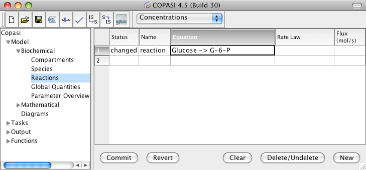
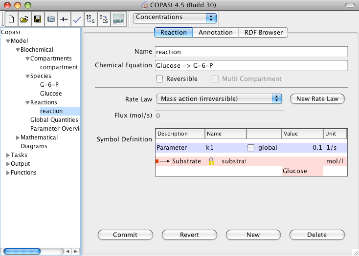

Again adding reactions essentially works the same way as adding compartments or species. When you navigate to the Reactions branch of the object tree which is located under the Model->Biochemical branch, you will see a table with five columns. The first two are Status and Name of the reaction. The third column called Equation describes the chemical formula and maybe additional modifiers of the reaction. The fourth column states the name of the kinetics for the reaction which depends on the equation. We will come to this in a second. The last column shows the flux through this reaction. The flux can not be set by the user but is calculated automatically when you
do a time course simulation.
The easiest way to add a reaction is to type the chemical equation into an empty equation cell in the table. After you typed the equation, you hit the return key and automatically land in the next row where you can type the next reaction equation. This way you can enter all the reactions that make up your model. When you are finished with typing the reaction equations, you commit all the reactions. If any of the reactions contain species that are not already present in the model, they are added automatically. If there was no compartment before, a compartment is also added and all new species get added to this compartment. If there is already one or more compartments, all new species get added to the first compartment that is listed in the object tree.
Warning: When typing reaction equations you should keep in mind that species names in COPASI can contain characters like "+" or even white-spaces. Since these characters would make it very hard if not impossible to parse the chemical reaction equation, you have to place those species names in double quotes. E.g. "Species 1" + "Species 2" -> "Species 3". No matter if your species names contain special characters or not, the species names have to be separated from the reaction symbols (+, *, =, and -> ) by white-spaces.
|  |
| Reaction Table with new Entry |
Each new reaction gets a default kinetic rate law which is irreversible mass action for reactions that contain a substrate. For reaction that only have a product (e.g. influx into a system) a constant flux kinetic is chosen.
|  |
| Dialog for changing Reaction Parameters |
Double clicking on an entry in the table will bring you to another dialog that lets you change certain parameters of the reaction. You can change the name of the reaction, the chemical equation and whether the reaction is reversible or not. Changing the chemical equation and the reversibility of a reaction influences the type of kinetics you can choose for the reaction. Each kinetic function defines how many substrates, products and modifiers it expects. Additionally it defines whether it can be used for reversible or irreversible reactions only or if it can be used on either. So depending on how many substrates, products and modifiers your kinetic equation has and whether it is reversible or not, only a subset of the defined kinetic functions will be available in the Rate Law combo box. If the kinetic function you want to assign to the reaction is not available yet, you can add it by clicking on the New Rate Law button (see also
User Defined Functions). Depending on the kinetic function you chose, you get a selection of parameters in the table named Symbol Definition, all functions parameters get a default value of 0.1 which can be changed by clicking into the corresponding cell and typing a new value.
Per default all parameters to a kinetic function are local parameters and they exist only in the scope of the rate law of one reaction. Sometimes it is of advantage to use the same parameter in the rate laws for several reactions. This way if you want to change to value of this parameter, you only have to change it in once instead of having to change it in every reaction it occurs in individually. Parameters that can be used in more than one reaction are called global quantities in COPASI. How you add a global quantity to your model is described in the section called
Global Quantities. Let us for the moment assume you already added such a global quantity to your model and now want to use it in a rate law. Each parameter in the Symbol Definition table has a check box labeled global. When you check this box, COPASI knows that the parameter that belongs to it is a global quantity and lets you select one from a list of global quantities that have been defined in the model. If none have been defined yet, the list contains only an entry termed unknown. In this case, you will have to define one or more global quantities first and then come back to the reaction where you want to use it. If the name of the global quantity is set to the
unknown term, COPASI will reset the type of parameter to local if you leave the reaction widget.
So far we did not go into the details of how chemical equations are to be specified. Chemical equations have a simple schema. First you state all the substrates separated by "+" characters. Please make sure that you separate the name of the substrate and the "+" character by at least one space character, otherwise COPASI will interpret the "+" sign as belonging to the species name. (Having the "+" character as part of a species name is allowed in COPASI !) after the list of substrates, you specify either an equals ("=") character if the reaction is reversible or the character combination "->" if the reaction is irreversible. This is followed by the list of products which must also be separated by the "+" character. Again make sure you have spaces around the separating "+" characters. Optionally this term can be followed by a semicolon and a list of modifiers which are separated by spaces. Either the list of substrates or the list of products may also be empty, but at least one of them must be present. Lets look at two examples:
- Species A is irreversibly converted into Species B. The chemical equation you would type is "A -> B".
- Species A and B are reversibly converted to Species C, the reaction has 2 modifiers C and D. The chemical equation for this in COPASI would be: "A + B = C; C D"Note that one of the modifiers is the product!
Warning: If the reaction takes place in one compartment, the reaction kinetic specifies a rate of concentration change, whereas if the reaction takes place in several compartments, the kinetic specifies the amount of substance change over time.
E.g. in the reaction A -> B, if A and B are in the same compartment, the kinetic function for the reaction returns its result in mol/(l*s). If A and B reside in different compartments, the result is returned in mol/s. (This assumes that your default units are set to mol, l and s.)